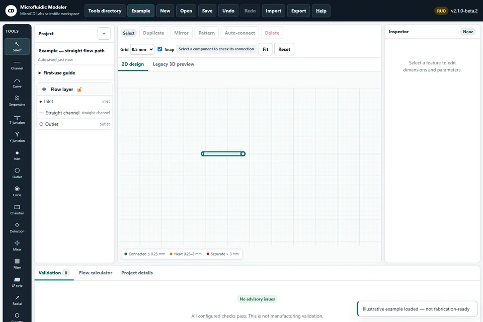

Research beta2.1.0-beta.2
Modern browser; legacy 3D requires WebGL
Microfluidic Modeler
Sketch 2D flow paths, inspect geometry and connection guidance, and save a native project.
Browser exports: Native JSON, SVG, PNG, CSV.
Legacy: Separate legacy 3D workspace: GLB, not synchronized with 2D. STEP/DXF remain disabled roadmap items; STL and OBJ are not advertised browser exports.
iOS: Separate App Store listing; current native-build capabilities are not verified by this checkout. See the separate App Store listing.
Data: 2D autosave in local storage; offline asset cache; no project upload. Research and engineering use; no clinical performance claim.
Open Microfluidic Modeler